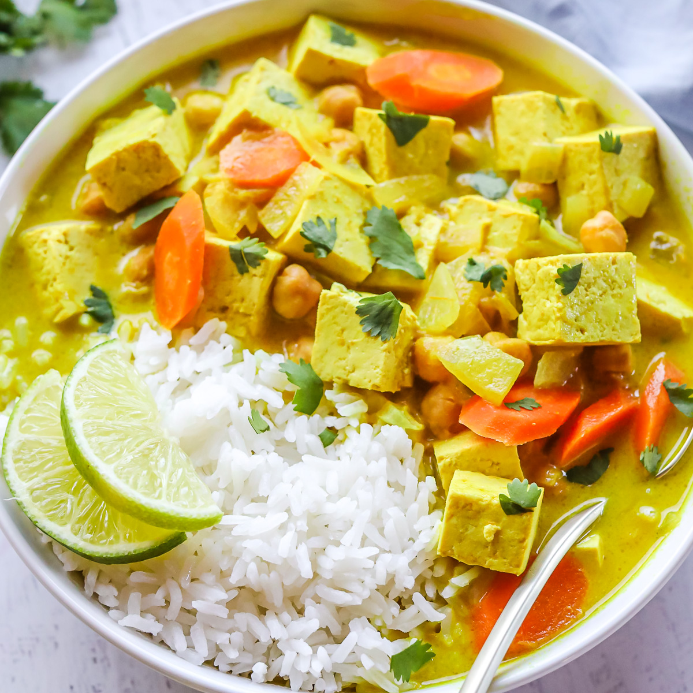

Home
Recipes
▼
French Toast
Yellow Curry
Green Pasta
About
Yellow Curry
★
★
★
★
★

Cuisine: Thai
Serves 3, serving size: 2 bowls
Total time: 25 mins
Ingredients
0.5x
1x
2x
1 bottle Trader Joe's
Yellow Curry Sauce
1 medium carrot
1 Yukon golden potato
1/3 cup frozen peas
6 oz extra firm tofu
2 cups uncooked rice
Instructions
Cook rice as desired. Meanwhile, chop veggies and tofu.
Bring a large pot to medium heat. Use a neutral oil to stir fry veggies from hardest to softest: carrot, potato, peas.
In a small pan, stir fry tofu.
Add sauce and tofu to pot, stirring slowly to combine.
Let simmer for 1-2 mins. Serve warm over rice.